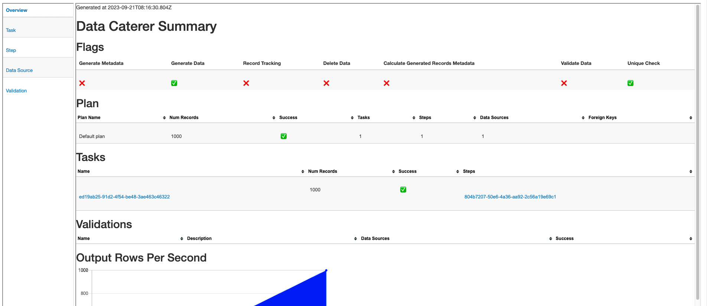

Cassandra
Info
Writing data to Cassandra is a paid feature.
Creating a data generator for Cassandra. You will build a Docker image that will be able to populate data in Cassandra for the tables you configure.
Requirements
- 20 minutes
- Git
- Gradle
- Docker
- Cassandra
Get Started
First, we will clone the data-caterer-example repo which will already have the base project setup required.
git clone git@github.com:pflooky/data-caterer-example.git
If you already have a Cassandra instance running, you can skip to this step.
Cassandra Setup
Next, let's make sure you have an instance of Cassandra up and running in your local environment. This will make it easy for us to iterate and check our changes.
cd docker
docker-compose up -d cassandra
Permissions
Let's make a new user that has the required permissions needed to push data into the Cassandra tables we want.
CQL Permission Statements
GRANT INSERT ON <schema>.<table> TO data_caterer_user;
Following permissions are required when enabling configuration.enableGeneratePlanAndTasks(true) as it will gather
metadata information about tables and columns from the below tables.
CQL Permission Statements
GRANT SELECT ON system_schema.tables TO data_caterer_user;
GRANT SELECT ON system_schema.columns TO data_caterer_user;
Plan Setup
Create a new Java or Scala class.
- Java:
src/main/java/com/github/pflooky/plan/MyCassandraJavaPlan.java - Scala:
src/main/scala/com/github/pflooky/plan/MyCassandraPlan.scala
Make sure your class extends PlanRun.
import com.github.pflooky.datacaterer.java.api.PlanRun;
public class MyCassandraJavaPlan extends PlanRun {
}
import com.github.pflooky.datacaterer.api.PlanRun
class MyCassandraPlan extends PlanRun {
}
This class defines where we need to define all of our configurations for generating data. There are helper variables and methods defined to make it simple and easy to use.
Connection Configuration
Within our MyCassandraPlan class, we can start by defining the connection properties to connect to Cassandra.
var accountTask = cassandra(
"customer_cassandra", //name
"localhost:9042", //url
"cassandra", //username
"cassandra", //password
Map.of() //optional additional connection options
)
Additional options such as SSL configuration, etc can be found here.
val accountTask = cassandra(
"customer_cassandra", //name
"localhost:9042", //url
"cassandra", //username
"cassandra", //password
Map() //optional additional connection options
)
Additional options such as SSL configuration, etc can be found here.
Schema
Let's create a task for inserting data into the account.accounts and account.account_status_history tables as
defined underdocker/data/cql/customer.cql. This table should already be setup for you if you followed this
step. We can check if the table is setup already via the following command:
docker exec host.docker.internal cqlsh -e 'describe account.accounts; describe account.account_status_history;'
Here we should see some output that looks like the below. This tells us what schema we need to follow when generating data. We need to define that alongside any metadata that is useful to add constraints on what are possible values the generated data should contain.
CREATE TABLE account.accounts (
account_id text PRIMARY KEY,
amount double,
created_by text,
name text,
open_time timestamp,
status text
)...
CREATE TABLE account.account_status_history (
account_id text,
eod_date date,
status text,
updated_by text,
updated_time timestamp,
PRIMARY KEY (account_id, eod_date)
)...
Trimming the connection details to work with the docker-compose Cassandra, we have a base Cassandra connection to define
the table and schema required. Let's define each field along with their corresponding data type. You will notice that
the text fields do not have a data type defined. This is because the default data type is StringType which
corresponds to text in Cassandra.
{
var accountTask = cassandra("customer_cassandra", "host.docker.internal:9042")
.table("account", "accounts")
.schema(
field().name("account_id"),
field().name("amount").type(DoubleType.instance()),
field().name("created_by"),
field().name("name"),
field().name("open_time").type(TimestampType.instance()),
field().name("status")
);
}
val accountTask = cassandra("customer_cassandra", "host.docker.internal:9042")
.table("account", "accounts")
.schema(
field.name("account_id"),
field.name("amount").`type`(DoubleType),
field.name("created_by"),
field.name("name"),
field.name("open_time").`type`(TimestampType),
field.name("status")
)
Field Metadata
We could stop here and generate random data for the accounts table. But wouldn't it be more useful if we produced data that is closer to the structure of the data that would come in production? We can do this by defining various metadata that add guidelines that the data generator will understand when generating data.
account_id
account_id follows a particular pattern that where it starts with ACC and has 8 digits after it.
This can be defined via a regex like below. Alongside, we also mention that it is the primary key to prompt ensure that
unique values are generated.
field().name("account_id").regex("ACC[0-9]{8}").primaryKey(true),
field.name("account_id").regex("ACC[0-9]{8}").primaryKey(true),
amount
amount the numbers shouldn't be too large, so we can define a min and max for the generated numbers to be between
1 and 1000.
field().name("amount").type(DoubleType.instance()).min(1).max(1000),
field.name("amount").`type`(DoubleType).min(1).max(1000),
name
name is a string that also follows a certain pattern, so we could also define a regex but here we will choose to
leverage the DataFaker library and create an expression to generate real looking name. All possible faker expressions
can be found here
field().name("name").expression("#{Name.name}"),
field.name("name").expression("#{Name.name}"),
open_time
open_time is a timestamp that we want to have a value greater than a specific date. We can define a min date by using
java.sql.Date like below.
field().name("open_time").type(TimestampType.instance()).min(java.sql.Date.valueOf("2022-01-01")),
field.name("open_time").`type`(TimestampType).min(java.sql.Date.valueOf("2022-01-01")),
status
status is a field that can only obtain one of four values, open, closed, suspended or pending.
field().name("status").oneOf("open", "closed", "suspended", "pending")
field.name("status").oneOf("open", "closed", "suspended", "pending")
created_by
created_by is a field that is based on the status field where it follows the logic: if status is open or closed, then
it is created_by eod else created_by event. This can be achieved by defining a SQL expression like below.
field().name("created_by").sql("CASE WHEN status IN ('open', 'closed') THEN 'eod' ELSE 'event' END"),
field.name("created_by").sql("CASE WHEN status IN ('open', 'closed') THEN 'eod' ELSE 'event' END"),
Putting it all the fields together, our class should now look like this.
var accountTask = cassandra("customer_cassandra", "host.docker.internal:9042")
.table("account", "accounts")
.schema(
field().name("account_id").regex("ACC[0-9]{8}").primaryKey(true),
field().name("amount").type(DoubleType.instance()).min(1).max(1000),
field().name("created_by").sql("CASE WHEN status IN ('open', 'closed') THEN 'eod' ELSE 'event' END"),
field().name("name").expression("#{Name.name}"),
field().name("open_time").type(TimestampType.instance()).min(java.sql.Date.valueOf("2022-01-01")),
field().name("status").oneOf("open", "closed", "suspended", "pending")
);
val accountTask = cassandra("customer_cassandra", "host.docker.internal:9042")
.table("account", "accounts")
.schema(
field.name("account_id").primaryKey(true),
field.name("amount").`type`(DoubleType).min(1).max(1000),
field.name("created_by").sql("CASE WHEN status IN ('open', 'closed') THEN 'eod' ELSE 'event' END"),
field.name("name").expression("#{Name.name}"),
field.name("open_time").`type`(TimestampType).min(java.sql.Date.valueOf("2022-01-01")),
field.name("status").oneOf("open", "closed", "suspended", "pending")
)
Additional Configurations
At the end of data generation, a report gets generated that summarises the actions it performed. We can control the output folder of that report via configurations. We will also enable the unique check to ensure any unique fields will have unique values generated.
var config = configuration()
.generatedReportsFolderPath("/opt/app/data/report")
.enableUniqueCheck(true);
val config = configuration
.generatedReportsFolderPath("/opt/app/data/report")
.enableUniqueCheck(true)
Execute
To tell Data Caterer that we want to run with the configurations along with the accountTask, we have to call execute
. So our full plan run will look like this.
public class AdvancedCassandraJavaPlanRun extends PlanRun {
{
var accountTask = cassandra("customer_cassandra", "host.docker.internal:9042")
.table("account", "accounts")
.schema(
field().name("account_id").regex("ACC[0-9]{8}").primaryKey(true),
field().name("amount").type(DoubleType.instance()).min(1).max(1000),
field().name("created_by").sql("CASE WHEN status IN ('open', 'closed') THEN 'eod' ELSE 'event' END"),
field().name("name").expression("#{Name.name}"),
field().name("open_time").type(TimestampType.instance()).min(java.sql.Date.valueOf("2022-01-01")),
field().name("status").oneOf("open", "closed", "suspended", "pending")
);
var config = configuration()
.generatedReportsFolderPath("/opt/app/data/report")
.enableUniqueCheck(true);
execute(config, accountTask);
}
}
class AdvancedCassandraPlanRun extends PlanRun {
val accountTask = cassandra("customer_cassandra", "host.docker.internal:9042")
.table("account", "accounts")
.schema(
field.name("account_id").primaryKey(true),
field.name("amount").`type`(DoubleType).min(1).max(1000),
field.name("created_by").sql("CASE WHEN status IN ('open', 'closed') THEN 'eod' ELSE 'event' END"),
field.name("name").expression("#{Name.name}"),
field.name("open_time").`type`(TimestampType).min(java.sql.Date.valueOf("2022-01-01")),
field.name("status").oneOf("open", "closed", "suspended", "pending")
)
val config = configuration
.generatedReportsFolderPath("/opt/app/data/report")
.enableUniqueCheck(true)
execute(config, accountTask)
}
Run
Now we can run via the script ./run.sh that is in the top level directory of the data-caterer-example to run the class we just
created.
./run.sh
#input class AdvancedCassandraJavaPlanRun or AdvancedCassandraPlanRun
#after completing
docker exec docker-cassandraserver-1 cqlsh -e 'select count(1) from account.accounts;select * from account.accounts limit 10;'
Your output should look like this.
count
-------
1000
(1 rows)
Warnings :
Aggregation query used without partition key
account_id | amount | created_by | name | open_time | status
-------------+-----------+--------------------+------------------------+---------------------------------+-----------
ACC13554145 | 917.00418 | zb CVvbBTTzitjo5fK | Jan Sanford I | 2023-06-21 21:50:10.463000+0000 | suspended
ACC19154140 | 46.99177 | VH88H9 | Clyde Bailey PhD | 2023-07-18 11:33:03.675000+0000 | open
ACC50587836 | 774.9872 | GENANwPm t | Sang Monahan | 2023-03-21 00:16:53.308000+0000 | closed
ACC67619387 | 452.86706 | 5msTpcBLStTH | Jewell Gerlach | 2022-10-18 19:13:07.606000+0000 | suspended
ACC69889784 | 14.69298 | WDmOh7NT | Dale Schulist | 2022-10-25 12:10:52.239000+0000 | suspended
ACC41977254 | 51.26492 | J8jAKzvj2 | Norma Nienow | 2023-08-19 18:54:39.195000+0000 | suspended
ACC40932912 | 349.68067 | SLcJgKZdLp5ALMyg | Vincenzo Considine III | 2023-05-16 00:22:45.991000+0000 | closed
ACC20642011 | 658.40713 | clyZRD4fI | Lannie McLaughlin DDS | 2023-05-11 23:14:30.249000+0000 | open
ACC74962085 | 970.98218 | ZLETTSnj4NpD | Ima Jerde DVM | 2023-05-07 10:01:56.218000+0000 | pending
ACC72848439 | 481.64267 | cc | Kyla Deckow DDS | 2023-08-16 13:28:23.362000+0000 | suspended
(10 rows)
Also check the HTML report, found at docker/sample/report/index.html, that gets generated to get an overview of what
was executed.
